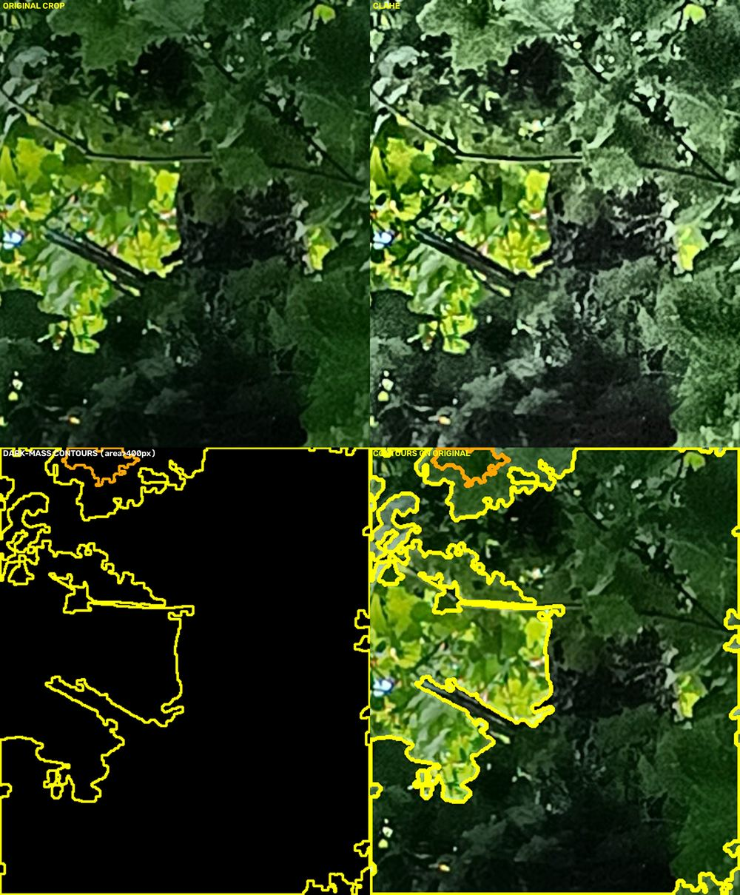
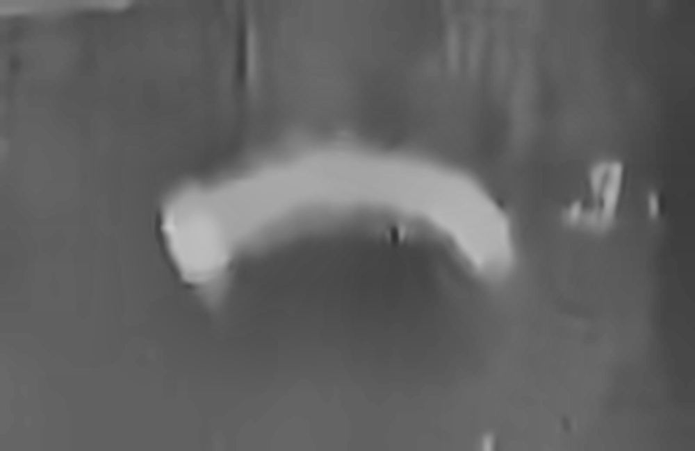
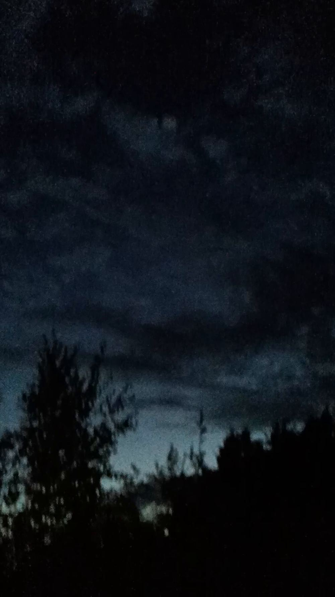
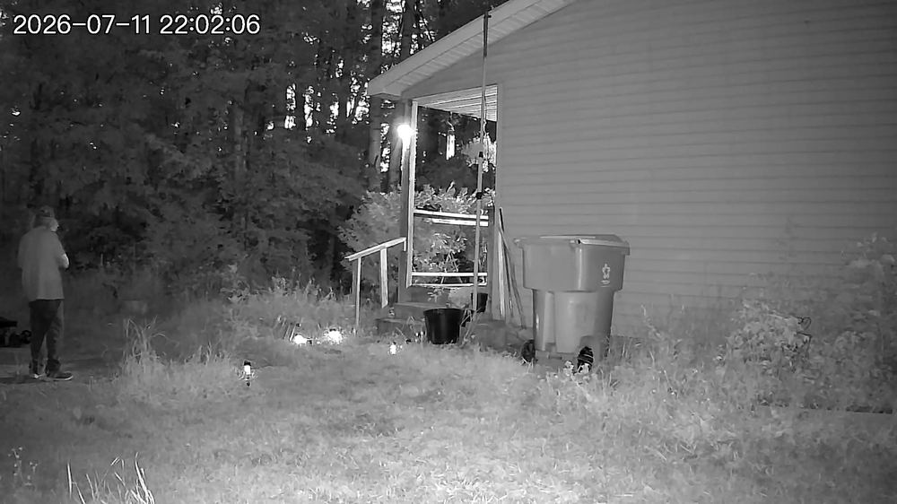
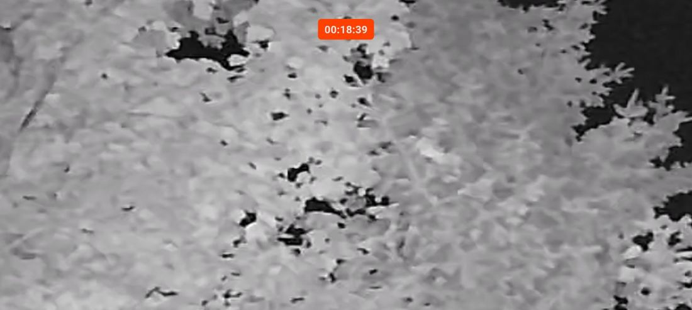
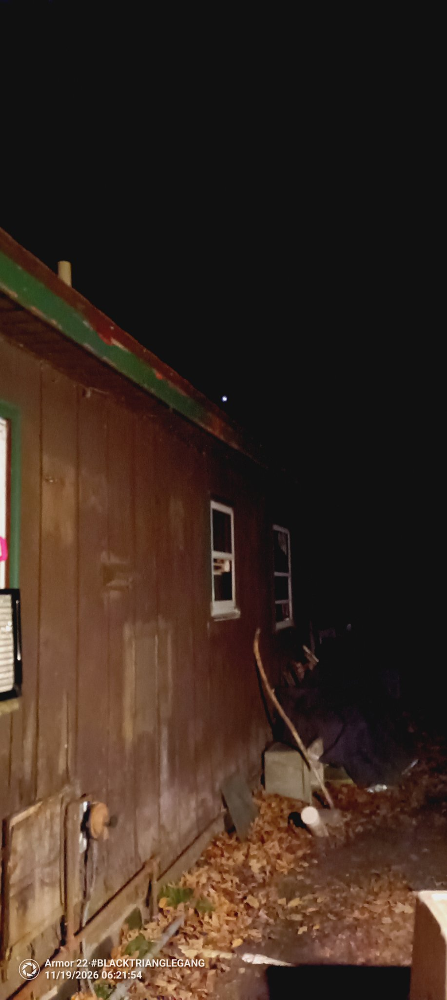
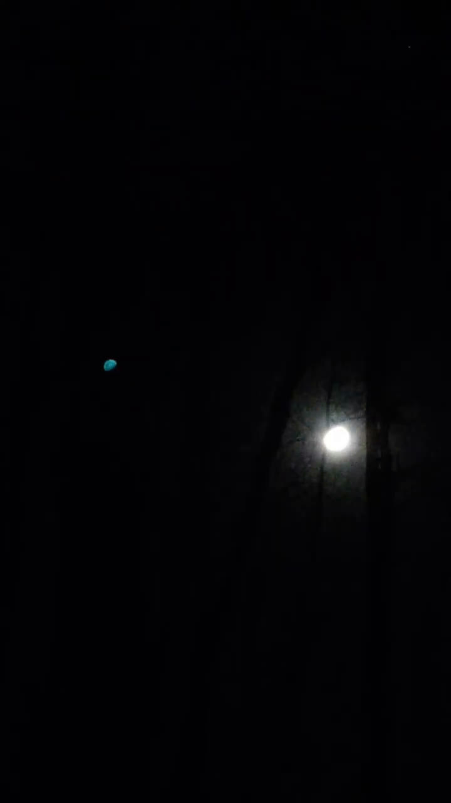
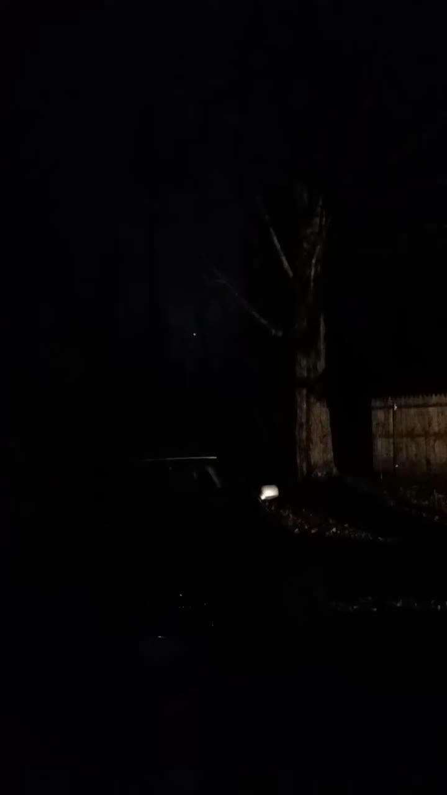

HOW TO READ THIS PAGE
Every item on this page carries its source. There are three kinds, and they are never blended:
- STATION MEASUREMENT What the station's instruments and tests returned — pixels, audio, differencing, hashes. These stand as measurements.
- OWNER'S ACCOUNT What the witness — the owner of this station, who shot this media — reports and believes. Labelled as his, in his words where the record carries them. His own ruling on his account stands at the Tree Event, below, and it governs the whole page.
- OPEN EXHIBIT Evidence known to exist but not yet in the station's hands. Named, never filled in.
Where the station's read is "nothing resolves," that is printed too. A no-call is a result.
CASE 1 — THE TREE EVENT

STATION MEASUREMENTWHAT THE STATION RETURNED
- The set, on one timeline: hero still 17:41:19; three crown stills 17:57:24 / 17:57:34 / 17:57:45; four stills through basswood foliage 18:02–18:03; Video 1 (31 s, 1080p); Video 2 (8.5 s); a burst frame at 18:30:33.
- Hero frame: a coherent dark mass seated on the limb in the sunlit gap left of the trunk — granular internal texture unlike the leaf or bark texture around it; the darkest, coldest object in the crop under false color; a small raised point on its top edge. It does not resolve into face or limbs at this resolution.
- Persistence: in all three 17:57 crown stills, across 21 seconds and a shifting viewpoint, a dark patch occupies the same structural position — top of trunk, at the fork into the crown. Position-consistent under parallax: a thing at the tree, not a sensor artifact. No movement claim can be extracted — wind and handheld motion defeat pixel differencing.
- A second form: the 18:30 burst frame shows a horizontal dark body with a mottled pale top at the crown of the snapped-top trunk — a different perch, about 49 minutes after the hero frame. Same signature family: dark, internally textured, edges bleeding into foliage.
- Video 1 blowout: about two seconds of full-white frames mid-video while the camera is static. Consistent with auto-exposure hunting against the sky; also consistent with a luminance spike. It cannot be certified either way from the video alone.
- Texture test: on the burst copy, the form's zone is flatter and less leaf-like than the frame's foliage around it (entropy ~32nd percentile, edge density ~35th, unique colors ~38th) — directionally matching the witness's eye. But this copy is a flattened, palette-dithered file, so its texture statistics partly describe the conversion, not the scene. Not certified on this copy.
OWNER'S ACCOUNTTHE WITNESS, IN HIS OWN FRAME
The owner identifies the hero-frame mass as a camouflaged being. He has drawn it twice, by hand, over the station's plates: a full figure over the hero plate — a mantid-form being, tall against the canopy — and a face study over the burst plate. His morphology read, from repeated sightings: a pinched mouth with a jagged bill, and tines in front that are never the same twice — "you can tell individual bugs."
His size estimation of the kind: the smaller ones ride around nine feet; an average would be 14 to 22 feet; the largest form — a mound of them, mantis-headed — approximately 150 feet, seen in infrared. He grounds the figures in trade experience: building contractor, tree work; he states he can call a mature tree's height on sight.
After the event, he reports, the tree's branches "looked like antenna branches — like organic electronics grew overnight" — his own limit, flagged by him: "I don't know how to explain it." And the departure, in his account: he kept lights on the tree and stayed up for a couple of days; finally had to sleep; woke, went out — "it was all changed and fucking gone." The activity, he reports, then manifested in other trees on the property. The tree had been a standing hotspot — the centerpiece of the majority of his videos all summer long.
"None of this is standing proof. This is all theory, based in perceived reality — my perception of my collapsed waveform."
That is the owner's own classification of his account, given when he filed it — the station's measurements stand as measurements; everything above them is his theory. This page keeps them in separate boxes, the way he ruled it.
OPEN EXHIBITSTILL OUTSTANDING
The burst's original full-resolution frames (the station's copy is flattened to one frame) — the highest-value next exhibit. And any scanner or device logs from 17:41–18:30 on Jul 19, 2026, for a time-correlation pass against the photo timeline.
CASE 2 — YARD ARC

STATION MEASUREMENTWHAT THE STATION RETURNED
- Two frames, 14 seconds apart (00:37:00, sha256 e62b637f…; 00:37:14, sha256 853192fb…). Fixed camera confirmed — phase correlation shift ~0.
- One major change: differencing isolates a bright blob on the shed wall — centroid (1465, 501), bounding box 100×35 px, 1,324 changed pixels; the region's peak rises 150 → 188 between the frames.
- The arc: frame 1 shows bare boards at that spot. Frame 2 shows a smooth, soft-edged luminous crescent — thicker and brighter at its left end, tapering to the right, floating against the wall plane. Certifiable: it appeared inside the 14-second gap (or during frame 2's exposure); it is a single continuous curved segment — not scene geometry, not a reflection fixed in the wall.
- A nucleus: the brightness is not uniform along the arc — it concentrates in a compact bright core at the left (head) end and falls off along the tapering tail. The structure is recorded as NUCLEUS + TAPERING BODY.
- The negative-space test — a null result, and it matters: the wall under the arc, compared pixel for pixel between the two frames, is IDENTICAL (mean 87.8 = 87.8, min 72 = 72). The sensor recorded no new darkness. The event is purely additive — light appeared; nothing was subtracted. The deep black seen under the arc in processed plates is a processing artifact, not the sensor record.
- Orb-in-orb measurements: nested brightness contours around the peak are real — closed at every threshold tested. But they are nested ovals, stretched along the direction of travel, their centers drifting along the arc — not concentric perfect circles. The falloff is strongly directional: toward the tail, brightness holds 188→140 out at 21 px; on the back side it collapses to wall level within ~6 px. A moving core with a wake — not the symmetric falloff of a static lit sphere.
- Not certifiable from two stills: what it is. A near-field reading (an insect sweeping through the infrared beam on a curved path) and the owner's reading both predict an arc-shaped trace like this one.
OWNER'S ACCOUNT
The owner holds the source clip these frames came from. His characterization of it, filed with the station: a straight-on form with a wavy wing down each side, luminescing.
OPEN EXHIBITSTILL OUTSTANDING
The source clip itself — the deciding exhibit for this case. The two stills can take the question no further.
CASE 3 — JUN 4 NIGHT SEQUENCE

STATION MEASUREMENTWHAT THE STATION RETURNED
- The sequence: three clips inside 45 seconds — clip 87 (22:19:09), clip 88 (22:19:34), clip 91 (22:19:54) — plus a fourth segment. A fifth file (89) proved to be a byte-identical duplicate of clip 88.
- Clip 87 (VID_20260604_221909, sha256 7fdf7ccf…, 20.8 s, 1080p): the audio track is near-silent except for one loud half-second at 14.5 s (RMS 0.052, track peak 0.353). The audio battery counts exactly one event in the whole clip, dominant frequency 102 Hz. Visually, the bright blob in the opening frames is the camera's pan across the lit yard/house — brightness decaying 145→104 over ~4 s, then settling dark at ~61–65.
- Clip 88 (VID_20260604_221934, sha256 dacf3397…, 25.3 s): audio essentially silent (RMS 0.0015, no loud half-seconds, peak 0.085). Blown-white opening frames, then dark.
- Clip 91 (22:19:54, 22.3 s, sha256 c5ad2bb1…): a handheld sweep. In the first 3.4 seconds a large, low bright region strobes — its bright area oscillates ~400↔4900 px at a ~1.5 Hz alternation: pulsing light, or the camera's exposure hunting; unassigned. At 18.4–18.7 s, a saturation sweep moves down-frame — the camera passing a bright source.
- The family the 102 Hz event belongs to: across the station's full analysis, a recurring low-tonal signature — dominants around 60–170 Hz, low spectral flatness when tonal — appears in three independent files. Voices and handling explain some clusters in those files. The tonal clusters are the residue that explanation does not reach.
CASE 4 — SECCAM, MOM'S YARD

STATION MEASUREMENTWHAT THE STATION RETURNED
- The file: 220206_010_100_0i22.mp4 (sha256 6fef1f06…) — 10.0 s, 2304×1296, 10 fps. It is filed under its burned-in stamp, 2026-07-11 22:02:08 onward; the camera-clock caveat applies to any camera's stamp.
- The camera's signature: severe vertical smear across all frames — the sensor/integration signature of this camera class, present before anything in the scene is read.
- A correction, kept in the record: the station's first read flagged two whole-frame "motion bursts" (2.7–4.5 s and 6.3–7.2 s). The full-resolution read resolved them: the bursts are the operator re-aiming the camera. The correction stands in the file next to the first read — that is how this station handles being wrong.
- Window A (22:02:10): house gable and covered porch, porch light on, trees behind; a TV antenna mast at the roofline with a dark bird (crow-sized) perched on it, unmoving. A clipped light shape at the bottom-left frame edge — possibly a person at the very edge, cut off — was not called.
- Window B (22:02:14): the camera tilted up to treetops and washed sky; the antenna bird still in place, lower in frame. The early-frame smear is the camera mid-pan at 10 fps.
- Blind read: no discrete object resolves at this grade. No standing figure resolves in this file.
OPEN EXHIBITSTILL OUTSTANDING
The owner believes a sibling clip from the same camera shows him standing at his mom's. That clip is not in this file and nothing here is read into it — it is outstanding.
CASE 5 — NIGHT FOLIAGE

STATION MEASUREMENTWHAT THE STATION RETURNED
- What the exhibit is: a screenshot of a video frame — downscaled and recompressed before the station ever saw it. Infrared night foliage filling the frame, with black canopy gaps.
- Tile texture scan (8×5 grid): every outlier tile resolves to scene structure — the sky-corner tile and the broken gap/foliage mixes. No tile carries a non-foliage texture signature.
- Dark-blob scan: the largest enclosed dark regions are the canopy sky gaps (12,087 px at ~(618,147), and the right-edge sky). The rest are gaps between leaves.
- Blind verdict: at screenshot resolution, nothing localizes as a discrete form. Foliage and sky, leaf-consistent throughout. That is the whole of what this exhibit can say — and it is printed here at full strength, next to the cases where the station found structure, because the no-calls are part of the record too.
- Timeline: the small hours of July 19, 2026 — the same date as the afternoon Tree Event. The two are cataloged adjacent to each other.
OPEN EXHIBITSTILL OUTSTANDING
The source video. It exists — the position badge proves a timeline — and screenshot-grade copies cap every test the station can run. Filed as a wanted exhibit: the Jul 19, 01:57-era night video.
CASE 6 — THE DAWN WATCH

STATION MEASUREMENTWHAT THE STATION RETURNED
Two lights were pointed at before dawn, and both were run to ground the same morning. The instrument is an ephemeris — a computed timetable of where every planet and bright star stands — worked out for this yard's exact spot on the Earth (44.981° N, 84.496° W), together with the space station's live position from the same feed this station's ISS watch face reads. Altitude is degrees above the horizon: 0° is the horizon itself, 90° is straight overhead. Azimuth is the compass direction. Magnitude is brightness — the lower the number, the brighter the light.
| WHEN (EST) | LIGHT | ALTITUDE | AZIMUTH | MAGNITUDE |
|---|---|---|---|---|
| 03:40 | Jupiter | 40.8° | 115° (ESE) | −2.0 |
| 03:40 | Mars — the companion | 40.4° | 113° (ESE) | +0.7 |
| 03:40 | Venus | −12.1° — below the horizon | 91.5° (E) | −4.4 |
| 06:21:54 | Jupiter | 58.3° | 172° (due S) | −2.0 |
| 06:21:54 | Mars — the companion | 58.9° | 169° (S) | +0.7 |
| 06:21:54 | Venus — the photographed dot | 15.2° | 121° (ESE) | −4.4 |
| 06:21:54 | Space station (ISS) | −42.8° — below the horizon | — (over Central Asia) | 9,277 km away |
- The high light is Jupiter. It rode from ESE at 40.8° up at 03:40 to the top of its climb — 58.3°, due south — by the time of the photograph. High over the southern yard: the top of the sky the witness was standing under.
- The companion is Mars. About 2° from Jupiter — roughly two finger-widths held at arm's length — riding with it all night, with the bright star Regulus in the same patch of sky.
- The low light in the photograph is Venus. At the second the shutter fired it stood 15.2° up in the ESE, in dawn twilight. At 03:40 it was still 12° below the horizon; it climbed into view before sunrise. It holds a morning apparition for months at a stretch — the witness has seen it before, and it will be up again tomorrow.
- The space station is ruled out by its own numbers. At 06:21:54 the station was 9,277 km away and 42.8° below this yard's horizon — over Central Asia, on the far side of the Earth. Nothing in the photograph can be the station.
- Polaris is ruled out by geometry. The North Star hangs fixed, due north, about 45° up, and never travels. The high light crossed the southern sky from ESE to due south. One line of arithmetic closes that door.
- Brightness, checked both ways. Venus at magnitude −4.4 against Jupiter at −2.0 — the timetable's math makes Venus about nine times brighter. The witness's own call, made in the dark before any numbers were run: five or six times brighter than everything else in the sky. His eye and the table land in the same place.
OWNER'S ACCOUNTTHE WITNESS, IN HIS OWN FRAME
The owner watched the high light and its companion across the small hours and asked the station the plain question: is that Polaris? On the low light, his field read was that if it wasn't the space station, it might be "a planet catching the morning sun." He also recorded — before any of the numbers above existed — that the low light was not the first time he had seen it, and that it outshone everything else in the sky.
His hypothesis was the answer. The station's work was to prove it, not to improve on it.
STATION MEASUREMENTTHE GRADE
IDENTIFIED — CELESTIAL. Two lights were pointed at. Both came back with names, and every number behind the names is printed above. This station does not point at a bright light and call it a UFO — it measures first, and when the measure returns a planet, a planet is what gets filed. Case closed; nothing outstanding.
CASE 7 — WATCHDOG NIGHT #2

STATION MEASUREMENTWHAT THE STATION RETURNED
The second Watchdog night ran five and a half hours on a phone lashed to a ladder, and it went out live in two parts — the first recording (17:56–20:16) and the second (20:18–23:24). The next day the station downloaded both and examined them the way this page examines everything: a frame every ten seconds across the whole night, two frames a second inside every logged event window, a pixel-level hunt for anything that moves, and — for one window — every single frame the camera shot. The rule of the examination, set before it started: a claim is graded against what the processed video itself resolves. The night's log and the desk's live grades are the claim set. They never upgrade a verdict. Where the recording cannot resolve a claimed event, the verdict below says so, with the reason measured.
| WHEN (EST) | CLAIMED | DESK LIVE GRADE | PROCESSED-VIDEO VERDICT |
|---|---|---|---|
| 17:57–18:01 · The Moon-crosser | An object crossed the Moon from 11 o'clock to 3, with a small wave in its path — the witness's eye. | IDENTIFIED — a Starlink group transit; closest satellite 2.5° from the Moon at 17:57:40; the wave read as atmospheric seeing. | NOT RESOLVED — NO MEASURE. The camera was still being set up until 18:00:05; the crossing minute falls inside the handling. The Moon is in frame from 17:59:48, and the steady frames after it hold no second moving point. The video neither confirms nor contradicts the desk's timetable identification — it does not hold the crossing. |
| 18:46–18:57 · The ISS dark pass | A computed pass, peak 18:51:40; the witness believed he caught only a faint tail. | Pass computed from the station's own ISS feed; capture unconfirmed. | NOT RESOLVED — NO MEASURE. The steady spans hold only star points, 1–2 pixels, and no mover. The peak minutes were not steady minutes: hard camera motion at 18:51:56–18:52:09, then a total lens flood, 18:53:54–18:54:06 — frame after frame of featureless white. The recording cannot testify about the station. |
| 19:44–22:02 · The northern held object, its arc, its positions | A light to the north-northwest that meandered, dove, then arrested among the branches like a heavenly body; later arced at celestial pace (~21:37); centre-screen by 21:59. The witness himself reframed its apparent pulse and motion as temperature-gradient banding before the night was out. | NO MEASURE live — pulled frames near-black, movement not confirmed; every catalog candidate was fast and orbital. | NO MEASURE — and what the recording holds instead is measured: one static bright point, 2–4 pixels, upper-centre frame, present from 20:27 past 22:03. It never moves against the frame's other static points. Its slow apparent drift, about 2 pixels a minute, is shared by every static point in the frame — that is the mount creeping, not the point travelling. At one frame a second, across both recordings, no independent mover exists in that sky. |
| ~20:37 · A possible drone | Upper right of frame, gone by about 20:40. | NO MEASURE live — black in the pulled frames; not disproven. | NO MEASURE. At two frames a second, nothing resolves in the upper right. The only motion in the window is the yard light in the findings below. |
| 20:38–20:43 · The Baron | A twin — the witness called the type himself, by eye and by ear, as it crossed. | IDENTIFIED — Beech Baron B58T, about 2 miles NNE at 2,600 ft, heading west, tracked on the station's ring the whole window. | The aircraft does not resolve. In this window the camera was aimed at the yard — tree, fence, the Jeep's roofline — not at the sky, and no aircraft crosses its sky. The identification stands on the ring data, in its own column. What the camera caught instead is in the findings below. |
| 22:40–23:00 · The Moon and its flare | The Moon watched through the branches; a coloured lobe beside it. | The lobe measured in the sensor data live; it moved with every re-aim — lens-side, picture-class. | CONFIRMED IN RECORDING. The frame at 22:58:02 — the exhibit above — holds the Moon and the teal lobe together, in the re-aimed framing. The desk's live grade and the recording agree. |
| 22:58 · THE BEAM | A column of light, seen by two eyewitnesses — the witness outside, his wife inside the house. | NOT in the recording on live playback — 60 frames at 2 fps plus a 3-minute review. NO MEASURE, not disproven. | NOT IN RECORDING — measured null at full resolve. Every one of the 4,500 frames from 22:57:42 to 23:00:12, at the recording's full 30 frames a second, was scanned for a bright column. The tallest column in any frame is 46 pixels — the Moon's own saturated core, the same in the beam's minute as in every other. A beam standing in that frame would rise hundreds of pixels. The witnesses stand; the video is silent, and its silence is printed here at full strength. |
| ~22:59 · The Moon-glow dimming | The Moon's glow dimmed for about a second, then brightened. | MEASURED in live playback — the halo darkened across a broad swath, then came back. | NOT REPRODUCED in the recording. The same swath of frame, tracked at 2 fps across 22:58:30–23:00:30, holds a steady mean — 15.2 to 18.3 around a median of 17.4, no dip. The desk's measure stands as a playback observation in its column; the downloaded recording does not hold it. |
| ~21:02 and ~22:42 · The tones | A rising tone; later a higher one, with a waver. Heard by the witness; no instrument on them. | No desk instrument — carried as reported. | NO MEASURE — the audio track cannot testify. A spectrogram pass was run on both windows and on a quiet control stretch. Both windows carry ordinary broadband sound — voices, handling. Above about 15 kHz the track's floor sits at the codec's zero, where no tone test can speak, and in the audible band nothing sustained separates either window from the control. The tones are neither confirmed nor excluded; the instrument is the limit, and the limit is the finding. |
STATION MEASUREMENTWHAT THE PROCESSING FOUND THAT THE LIVE LOG DID NOT CARRY
- 18:35:46–18:38:36 — the camera off the sky. Between the Moon window and the space-station window, the recording spends about three minutes at ground level: the ladder at close range, motion-blurred, and a bright lamp flooding the lens. Nobody logged it live. It is part of why the evening's coverage has the gaps it has, and it is printed here for the same reason.
- 20:39:23–20:39:39 — a moving light washes the yard. For sixteen seconds the yard scene lights up — frame brightness doubles, the count of lit pixels rises nine-fold, lit points sweep rightward across the mid-frame — then it ends, as a hand re-aims the camera. It falls inside the Baron's window, but at ground level, in a camera aimed at the yard. The recording does not show what the light was.
- 21:53:47–21:53:52 — a close light floods the lens. A bright mass climbs from the bottom of frame to full-frame saturation in four seconds, then clears. The same signature as the lamp at 18:38 and the flood inside the ISS window.
- 22:32:37–22:32:41 — a light travels the frame's bottom edge, right to left, at ground level, for about four seconds. Noted for the record; no claim attaches to it.

And the whole night at a glance: across 5 hours 36 minutes, at a frame every ten seconds, the recordings hold no disturbance outside the windows and findings above — and every disturbance they do hold is a camera event: a setup, a lamp, a flood, a re-aim. The sky the camera actually held steady on was, at this resolve, a quiet sky.
OWNER'S ACCOUNTTHE WITNESS, IN HIS OWN FRAME
The witness worked the whole night outside — set the phone on the ladder, called the Baron's type off its sound before any track was pulled, watched the northern light for the better part of two hours and said, on the record and before any processing existed, that part of what it seemed to do could be the air itself bending light. At 22:58 he saw a beam, and his wife saw it from inside the house. Two people, one moment, no warning. That account stands here as his — and beside it, in its own column, the recording's silence. This station does not make one column eat the other.
STATION MEASUREMENTTHE GRADE
ONE CONFIRMATION, FOUR NEW MEASUREMENTS, AND THE NO-CALLS PRINTED AT FULL STRENGTH. The processed video confirms the Moon and its lens-side flare exactly as the desk graded them live. It adds four measured items the live log never carried — three lights at ground level and a camera off its aim. And on the night's sky claims — the held object and its arc, the drone, the beam — the recording cannot testify, for reasons that are themselves measured: a camera in motion, a camera aimed at the yard, a star-field point and a creeping mount, a column scan that never rises past the Moon's own core. The desk's instrument identifications — the Starlink group, the Baron, the ring traffic — stand in their column, neither raised nor lowered by a video that was, at those minutes, pointed somewhere else. The raw hours are linked above for anyone who wants to run the same examination. That is what an examination returns.
ACROSS THE CASES
STATION MEASUREMENTTWO FAMILIES
- Nucleus + taper, two nights: the Jul 14 sky event's beaded streak — bright saturated head, tapering trail — and the Jul 17 Yard Arc's nucleus profile share one architecture. Two events, two cameras, one recurring morphology.
- A low-tonal audio family, three files: a recurring signature of dominants around 60–170 Hz, tonally flat where it appears, in three independent recordings — including the single 102 Hz event alone in the Jun 4 sequence's otherwise near-silent clip 87.
Recurrence is not an identification. It is the reason these files stay open.
YOUR FOOTAGE, SAME STATION
Every case on this page went through the same four passes your media would: hashed and logged on arrival, cleaned and stacked, measured for the outline the data supports, and read back in plain words — with the no-calls printed, not buried.
THE EXAMINATION STATION — $9.99 STILLS · $29.99 WITH FILMSOriginals are destroyed after delivery. A private service of Apex Air Solutions — not a government office, not a reporting agency.